Growing up watching Disney animated films, I was always drawn to the storytelling and the process behind them. As a kid, I'd daydream about how an animated movie is actually made, how the narrative is built — and I never imagined how it all works until...
I clearly remember when I saw Toy Story. I had just spent Christmas at Disney with my family — one thing I'm really grateful to my parents for is that they always made the effort to take me to Disney for Christmas. That was my first time in the United States. Getting back on topic: about a year after that trip, they lent me a Disney and Pixar movie called Toy Story. And when I saw the first few frames, I was like "wow, that's not a drawing, those are..." I don't even know how to explain it. Obviously I was a kid, so my dad just told me they were 3D objects. I genuinely had no idea how he knew that. I asked him how they're made, and he said he didn't know either — but he looked up some basic stuff about it and explained it to me, the way he had figured it out. Obviously, tailored for a seven-year-old.
I remember watching The Reluctant Dragon — those first few minutes caught my attention because it wasn't an animated film. When I saw Robert Benchley's wife telling him a story, I figured it wouldn't be about animation at all. Then they take him to the Disney studios and I see the workers moving these transparent sheets with drawings on them, and I was like "wow, what is that?" And then Robert's in an art class and I was like "wow" again. What really got me was them saying "animated film" in the middle of an art class. Honestly, I didn't get a lot of the jokes, but I think that's what kept me watching the whole movie and made me finally understand how it all works.
I remember I was a kid and my parents gave us some Disney VHS tapes that were supposed to help us learn English. They never told me what they were for. About four months later, a few days before Christmas, my parents loaded us into the minivan — Male, Jose, and me — and drove us to the Guadalajara airport. They put us in our strollers, and I remember very little of that. I didn't know where we were going because I was half-asleep, but they put us on a plane. When I woke up, the pilot said "thank you for flying with us," and I was fully awake. I looked out the windows. I had never seen an airport that big. Of course, it was already daytime. And that same day, we went from my parents' friends' apartment all the way to Disney, and I couldn't believe I was actually there — in that place, the one from the VHS tapes. My parents said "welcome to Disney." The people checking our tickets were so kind. Part of the day I was literally crying from happiness, and I thought that's where they made the animated movies. It was an overwhelming feeling..
I will always keep trying to make my dream of working at Disney Animation come true. I'm not giving up, I'm not resting. Maybe I'm not the most talented or the fastest, but if I set my mind to something, I make it happen. I feel like life has already thrown me a lot of challenges. People mock me, saying I'll never make it, and I want to prove them wrong — to write scenes for a Disney film and make sure no one ever says that to me again. From my bullies when I was in elementary school to now, as an adult. I want to show my teachers, show everyone, especially my dad and my brother, who think AI will beat me at this. That's all.
"its Kind a fun to do the impossible - Walt Disney."
"Mass is equal to force divided by acceleration - Newton."